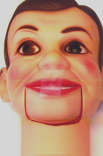

Charlie needs your vote!
3/3/2009
{kind=link}

Would you like to play puppet repair person on this "nearly vintage" doll? Sometimes simple ventriloquist doll repairs still pose challenging decisions.
This 1966 Juro Charlie McCarthy (made in the USA) was sent to me for mouth repair due to a broken rubber band (which I will replace with a more permanent spring). But what should I do about the ill fitting mouth? Someone at some time carved an unsightly chunk out of the neck under the left side of Charlie's chin. Here are my choices:
1) Leave it as is, and you can see how that will appear.
2) Carve out the right side, which will make an oversize gap under the mouth, but at least it will be symmetrical.
3) Fill the space and paint the filler as best possible to match the plastic (never a perfect match).
4) Fill the space and repaint the entire head which makes the repair invisible and will result in a very attractive doll but at the cost of originality plus diminished value as a collector's doll.
What would you advise? You can cast your vote. See poll posted in the margin at right.